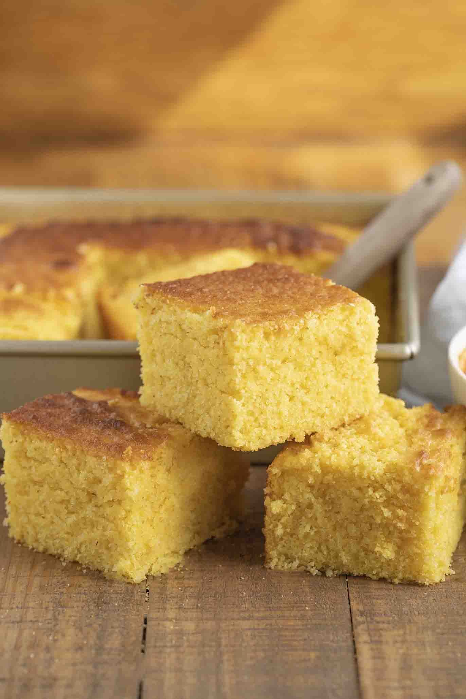

Cornbread

Description
Cornbread is a popular type of bread in the United States, known for its slightly sweet, crumbly, and golden texture. It is made from a mixture of cornmeal and wheat or all-purpose flour, along with other ingredients..
Ingredients
- Cornmeal: This is the primary ingredient, and it gives cornbread its distinct corn flavor and texture. It's usually made from ground dried corn and comes in different varieties, such as fine, medium, or coarse.
- Flour: Some recipes call for a combination of cornmeal and all-purpose flour or wheat flour. The flour helps create a lighter texture and structure in the bread
- Leavening agents: Baking powder and/or baking soda are used to make the cornbread rise and become light and fluffy.
- Salt: A small amount of salt is added to enhance the flavor.
- Sweetener: Cornbread can have a subtle sweetness, and sugar or honey is often added for this purpose. The amount can vary based on personal preference.
- Buttermilk or milk: Liquid is needed to create the right consistency for the batter. Buttermilk is a common choice and adds a tangy flavor, but regular milk can also be used.
- Eggs: Eggs help bind the ingredients together and contribute to the structure of the cornbread.
Steps
- Preheat the oven to a specific temperature (usually around 400°F or 200°C) and grease a baking dish or cast-iron skillet.
- In a mixing bowl, combine the dry ingredients, including the cornmeal, flour, leavening agents, salt, and sugar (if desired).
- In another bowl, mix the wet ingredients, including buttermilk or milk, eggs, and melted butter or oil. You can also add any optional ingredients like corn kernels at this stage.
- Gently fold the wet ingredients into the dry ingredients, being careful not to overmix. The batter should be lumpy, not smooth.
- Pour the batter into the greased baking dish or skillet.
- Bake in the preheated oven for around 20-25 minutes, or until the cornbread is golden brown on top and a toothpick inserted into the center comes out clean.
- Allow the cornbread to cool for a few minutes before slicing and serving.